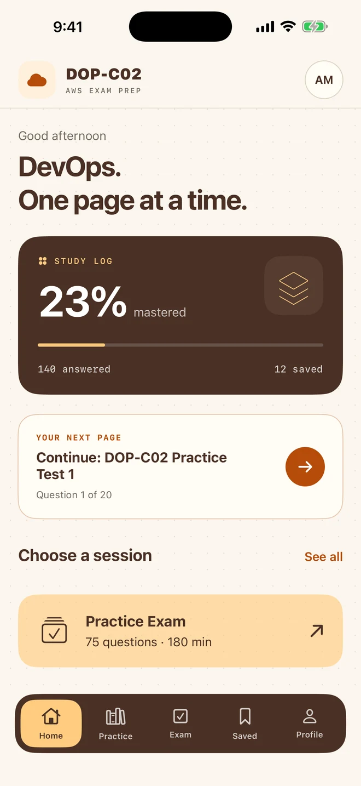
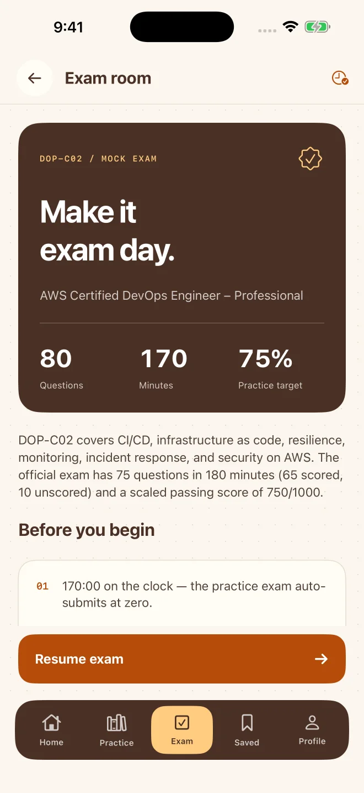
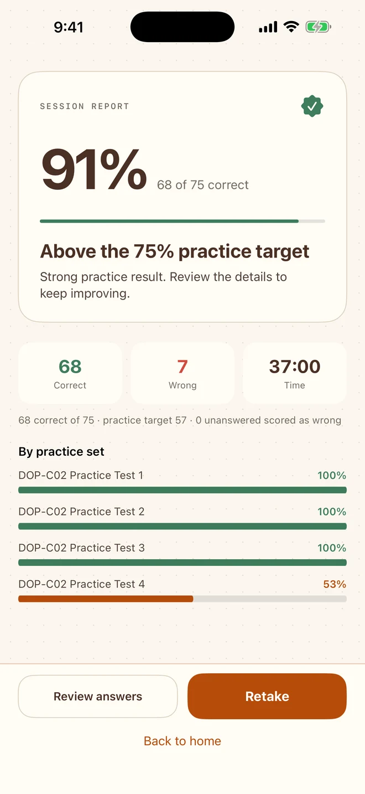

One set at a time.
Explore 27 practice sets. Review the source answer and explanation after each question, then pick up where you stopped.
AWS DOP-C02 PREP · iPhone & iPad
A calmer place to prepare for DevOps. Build your rhythm with focused practice, timed exams and a study journal that remembers where you left off.
Made for iPhone & iPad · iOS 17 or later

01 / BUILD YOUR RHYTHM
Five minutes between meetings or a quiet evening at your desk. There’s a session for both.
Explore 27 practice sets. Review the source answer and explanation after each question, then pick up where you stopped.
Try a Flash Challenge with 10, 20 or 30 questions. Switch to Time Trial when you want to practice under pressure.
Return to wrong answers and missed questions. Bookmark the ones that deserve another look.
02 / REHEARSE THE DAY
Settle in for a timed mock exam. Move between questions, flag what needs a second look and see the full picture when you finish.
Practice, not a prediction. The app’s 75% target is not equivalent to AWS’s scaled passing score.


03 / TURN RESULTS INTO A PLAN
Your journal keeps the details, so you can focus on the next useful step.
Screens show sample progress, not a promised result.
YOUR NEXT PAGE
No ads. No sign-in. Questions or feedback? We’re listening.